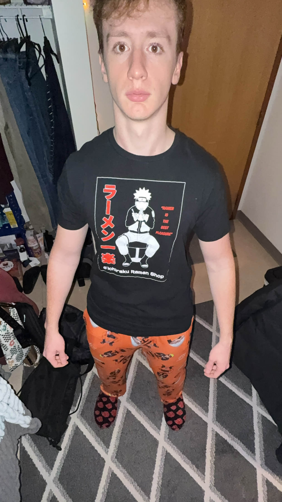
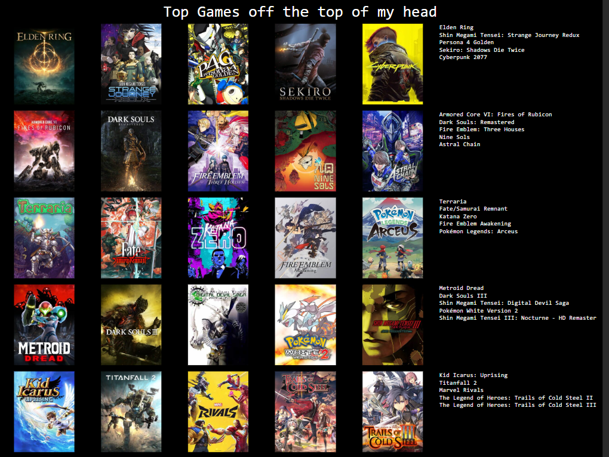

It is I, the creator of this site.

I am Alex. Web design is my passion.
The only information I am willing to share here is what my top twenty-five favorite games are. If that’s okay with you, then keep reading. Otherwise, go back to the home page or something idc.
I used Topsters 3 to make this list, and it had 25 spots to fill.
For a gamer like me, that isn’t that many of spots to fill. The idea is that each row isn’t ordered, but to make it into the row, the game has to be in that tier.
So, a game in the same row isn’t necessarily better than the other games in the row, but it is better than the games in rows below it.
(this is me seeing what a blockquote looks like)
Anyway, here’s the list:
